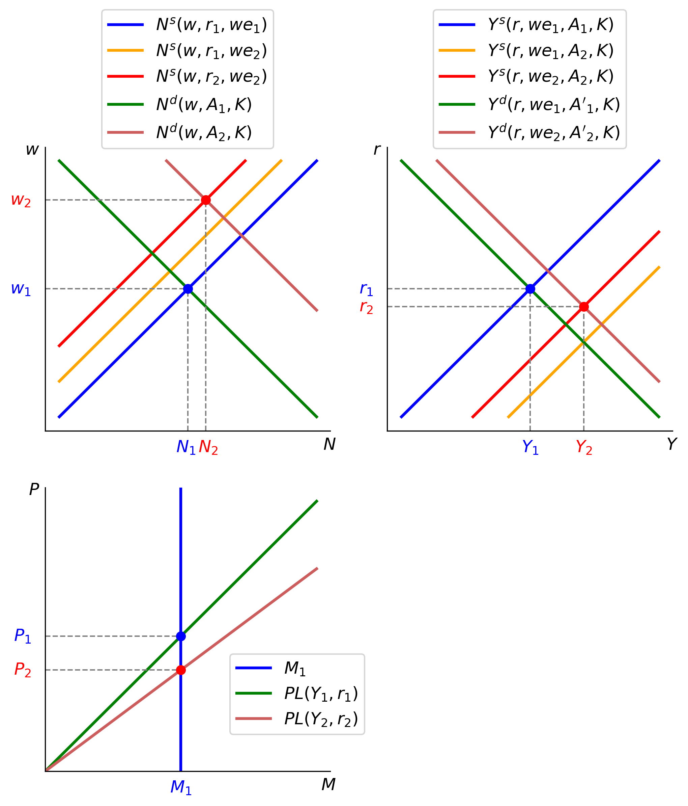
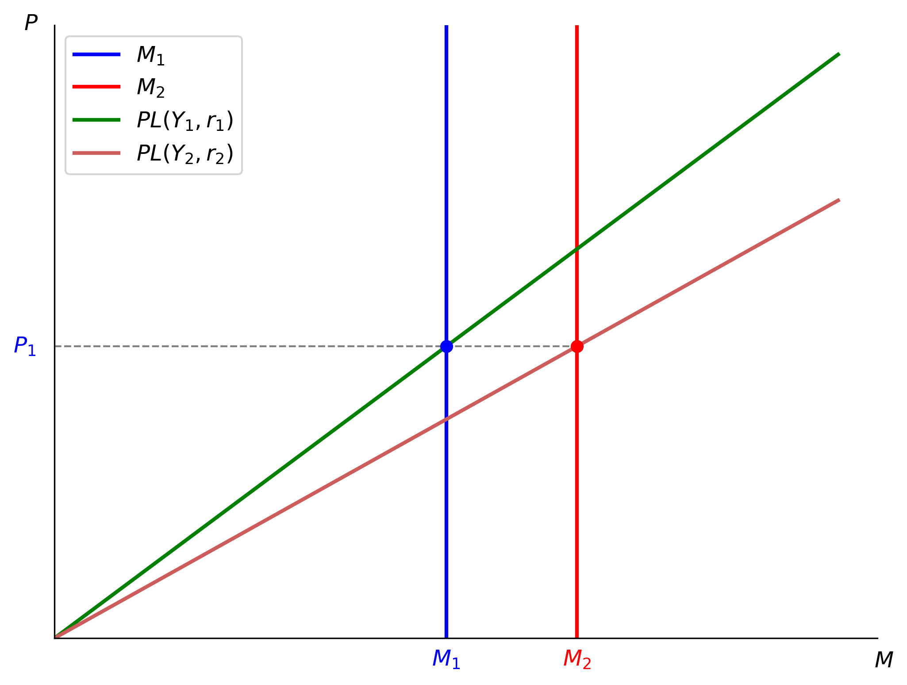
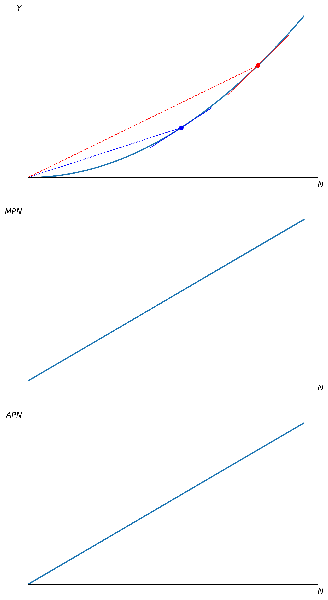
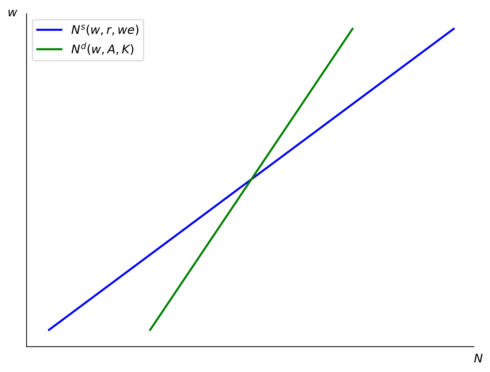
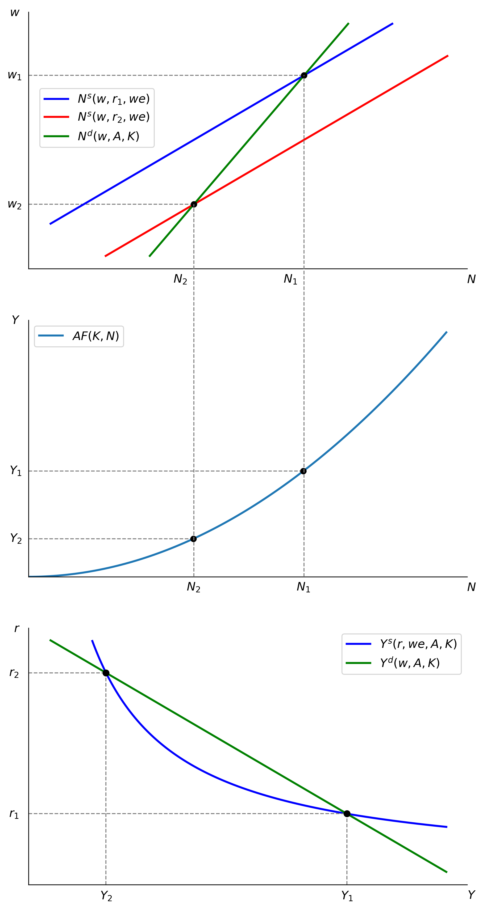
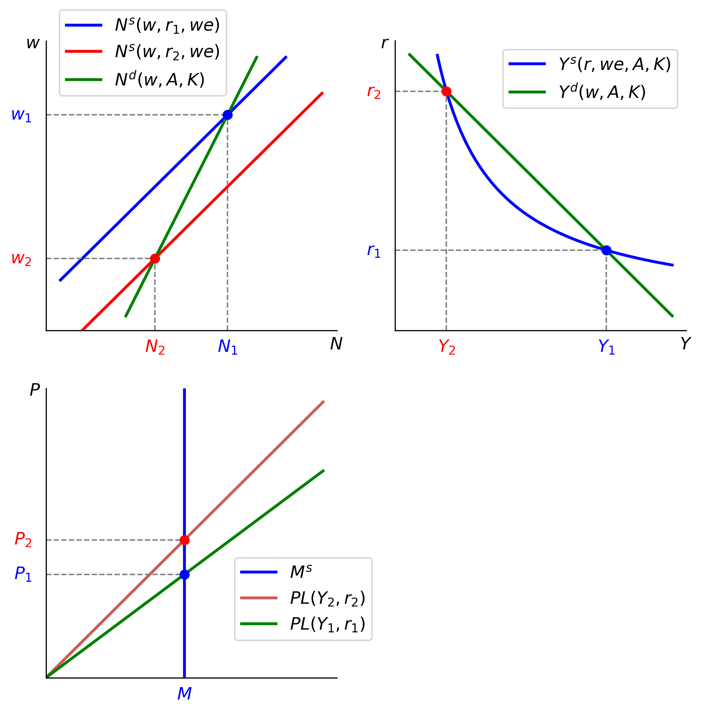
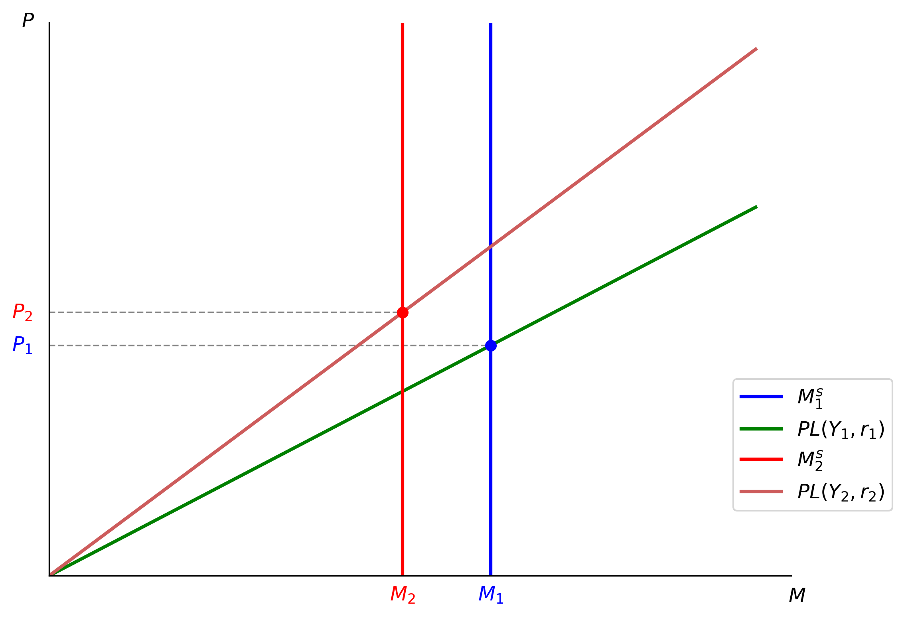
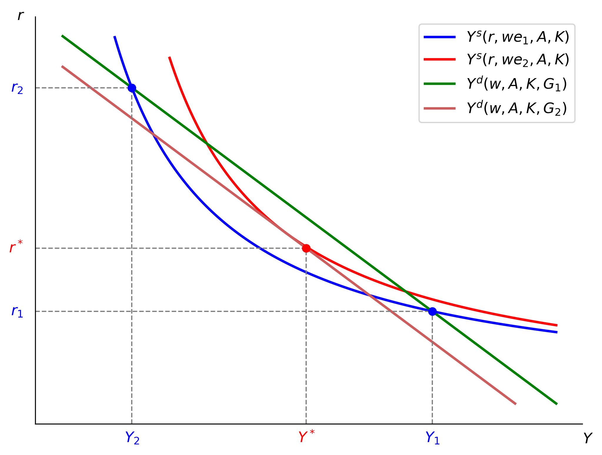

20. Modely hospodárskych cyklov s pružnými cenami a mzdami#
Po vydaní Keynesovej knihy Všeobecná teória zamestnanosti, úroku a peňazí [Key36] dominoval makroekonómii niekoľko desaťročí názor, že hospodárske cykly sú dôsledkom nedostatočného agregátneho dopytu. Peniaze sa nepovažovali za neutrálne ani v krátkom období a významnú úlohu pri stabilizácii ekonomiky mala zohrávať menová a fiškálna politika.
V 60. rokoch minulého storočia keynesovské modely kritizovali monetaristi na čele s Miltonom Friedmanom. Zdôrazňovali význam menovej politiky a spochybňovali schopnosť vlády stabilizovať ekonomiku prostredníctvom aktívnych hospodárskopolitických zásahov.
V 70. rokoch prišla ďalšia vlna kritiky spojená s menami Robert Lucas, Thomas Sargent, Neil Wallace a Robert Barro. Podľa nich by makroekonomické modely mali byť odvodené z mikroekonomického správania domácností a firiem. Vznikli tak modely všeobecnej rovnováhy s explicitnými mikrozákladmi [Luc76].
V tejto kapitole sa budeme venovať modelom hospodárskych cyklov s pružnými cenami a mzdami. V týchto modeloch sa ceny a mzdy prispôsobujú zmenám dopytu a ponuky a trhy sa priebežne nachádzajú v rovnováhe.
V kapitole Súčasné keynesovské modely: nepružné ceny sa budeme venovať modelom s nepružnými cenami a mzdami, ktoré tvoria základ súčasných keynesovských modelov používaných centrálnymi bankami a ekonomickými inštitúciami.
V oboch kapitolách budeme vychádzať z modelov všeobecnej rovnováhy uzavretej ekonomiky s peniazmi.
20.1. Model reálneho hospodárskeho cyklu#
Moderná teória reálnych hospodárskych cyklov vznikla najmä prácami Finn E. Kydlanda a Edwarda C. Prescotta, ktorí ukázali, že významnú časť hospodárskych výkyvov možno vysvetliť reálnymi šokmi v prostredí pružných cien a miezd [KP82].
V našom modeli bude reálny šok reprezentovaný zmenou celkovej produktivity faktorov. Predpokladajme, že ide o pretrvávajúci šok. Takýto šok nepretrváva natrvalo, ale jeho účinky nezmiznú ani po jednom období. Rovnaký koncept sme použili pri modelovaní pretrvávajúceho príjmového šoku v prídelovej ekonomike v časti Pretrvávajúce zmeny príjmu, kde bola miera pretrvávania definovaná vzťahom (8.18).
Pretrvávajúci reálny šok predstavuje náhodnú zmenu celkovej produktivity faktorov v prvom období
a v druhom
kde \(\sigma\) je veľkosť šoku a \(0<\rho<1\) je miera jeho pretrvávania.
Inými slovami, produktivita sa zmení v oboch obdobiach, pričom zmena v druhom období dosahuje iba podiel \(\rho\) z pôvodného šoku. Ak sa produktivita v prvom období zvýši o \(\sigma\), v druhom období zostane zvýšená len o \(\rho\sigma\). Čím je parameter \(\rho\) bližšie k jednej, tým dlhšie účinky šoku v ekonomike pretrvávajú.
Zopakujme vplyvy zvýšenia celkovej produktivity faktorov v oboch obdobiach. Majme pritom na pamäti, že efekt budúceho zvýšenia produktivity je menší ako efekt súčasného zvýšenia.
Zvýšenie \(A\) zvyšuje hraničný produkt práce, dopyt po práci, reálnu mzdu a ponuku výstupu.
Zvýšenie \(A\) aj \(A'\) zvyšuje životné bohatstvo domácností. Príjmovým efektom sa zvyšuje spotrebný dopyt a dopyt po voľnom čase. Rastie dopyt po výstupe a klesá ponuka práce a ponuka výstupu.
Zvýšenie \(A'\) zvyšuje budúci hraničný produkt kapitálu, investičný dopyt a dopyt po výstupe.
Za predpokladu, že a) príjmový efekt zvýšenia životného bohatstva je dostatočne malý,
b) efekt súčasného zvýšenia celkovej produktivity faktorov na ponuku výstupu prevyšuje efekt zvýšenia budúcej produktivity na dopyt po výstupe,
sa ponuka výstupu zvýši viac ako dopyt po výstupe a úroková miera klesne.
Dynamickým substitučným efektom poklesu úrokovej miery sa zvýši dopyt po voľnom čase a zníži ponuka práce.
Na Obr. 20.1 je zobrazená zmena konkurenčnej rovnováhy po pretrvávajúcom šoku celkovej produktivity faktorov podľa zaužívanej konvencie: pôvodné hodnoty sú označené indexom 1, hodnoty po zmene indexom 2; polohy kriviek dopytu a ponuky pred zmenou sú označené modrou a zelenou farbou, po zmene červenou a tmavočervenou.
Vplyvom zvýšenia súčasnej celkovej produktivity faktorov sa zvýši hraničný produkt práce. Na trhu práce (horný pravý graf) sa dopyt posunie zo zelenej do tmavočervenej krivky. Na trhu výstupu (horný ľavý graf) sa ponuka posunie z modrej do oranžovej čiary.
Vplyvom zvýšenia budúcej produktivity a príjmovým efektom rastu životného bohatstva sa zvýši dopyt po výstupe, ktorý sa posunie zo zelenej do tmavočervenej krivky. Keďže spotrebiteľ si príjmovým efektom zvýši voľný čas, ponuka práce sa posunie doľava z modrej do oranžovej krivky a ponuka výstupu doľava z oranžovej do červenej.
Dynamickým substitučným efektom poklesu úrokovej miery sa zvýši dopyt po voľnom čase a ponuka práce sa posunie z oranžovej do červenej krivky.
Vo výsledku sa zvýšia reálna mzda a výstup. Ak je príjmový efekt rastu životného bohatstva dostatočne malý a efekt súčasného zvýšenia celkovej produktivity faktorov prevláda nad efektom zvýšenia budúcej produktivity faktorov, úroková miera klesne a práca narastie.
Spotreba vzrastie príjmovým efektom rastu životného bohatstva a dynamickým substitučným efektom poklesu úrokovej miery.
Investície vzrastú vplyvom vyššej budúcej celkovej produktivity faktorov a poklesu úrokovej miery.
Zvýšenie výstupu a pokles úrokovej miery zvyšujú dopyt po peniazoch. Pri nezmenenej ponuke peňazí sa preto rovnováha na trhu peňazí obnoví poklesom cenovej hladiny.

Obr. 20.1 Vplyv pretrvávajúceho zvýšenia celkovej produktivity faktorov#
20.1.1. Model reálneho hospodárskeho cyklu a cyklické charakteristiky#
Ako dobre dokáže model reálneho hospodárskeho cyklu (RBC) vysvetliť cyklické charakteristiky reálnych veličín?
Po pretrvávajúcom zvýšení celkovej produktivity faktorov model predpokladá zvýšenie výstupu (HDP), spotreby, investícií, práce a mzdovej sadzby. Obr. 16.11 ilustruje, že rast HDP sprevádzaný rastom celkovej produktivity faktorov a práce vedie k rastu priemerného produktu práce.
RBC model predpokladá, že spotreba, investície, práca (zamestnanosť), reálna mzda a priemerný produkt práce sú procyklické veličiny, teda menia sa rovnakým smerom ako HDP, čo zodpovedá pozorovaniam slovenskej ekonomiky (Obr. 13.23,Obr. 16.10) a ďalších ekonomík.
Premenná |
Údaje |
Model |
|---|---|---|
Spotreba |
Procyklická |
Procyklická |
Investície |
Procyklická |
Procyklická |
Zamestnanosť / práca |
Procyklická |
Procyklická |
Mzdová sadzba |
Procyklická |
Procyklická |
Priemerný produkt práce |
Procyklická |
Procyklická |
Model predpokladá neutralitu peňazí. Po pretrvávajúcom zvýšení celkovej produktivity faktorov sa zvýši dopyt po peniazoch. Ak centrálna banka na túto zmenu nezareaguje zvýšením ponuky peňazí, cenová hladina sa musí prispôsobiť poklesom. RBC model preto predpokladá kontracyklickosť cenovej hladiny.
Empirické pozorovania tento predpoklad nepotvrdzujú. V slovenskej ekonomike je cenová hladina acyklická (Obr. 13.23). V ekonomike EMÚ je podľa údajov v Obr. 19.10 dokonca procyklická.
RBC model zároveň predpokladá, že reálne veličiny sú od vývoja peňazí oddelené. V súlade s tým by peňažné agregáty nemali vykazovať systematický vzťah k hospodárskemu cyklu. Údaje za ekonomiku EMÚ v Obr. 19.10 skutočne naznačujú, že množstvo peňazí je acyklické.
Tento záver však nie je v súlade s niektorými empirickými štúdiami. Milton Friedman a Anna Schwartzová v publikácii A Monetary History of the United States, 1867–1960 dospeli k záveru, že [FS63]:
nominálna ponuka peňazí je procyklická,
zmeny v ponuke peňazí predbiehajú zmeny v hospodárskej aktivite.
Model reálneho hospodárskeho cyklu dokáže tieto historické pozorovania vysvetliť predpokladom endogénnosti peňazí.
Prvé vysvetlenie vychádza zo širšej definície peňazí (napríklad agregátov M1 alebo M2), ktoré zahŕňajú aj bankové vklady.
Ak sa pretrvávajúco zvýši celková produktivita faktorov,
zvýši sa HDP a ekonomická aktivita,
rast ekonomickej aktivity vedie k rastu objemu bankových vkladov,
zvýši sa množstvo peňazí.
Naopak, ak sa produktivita faktorov zníži, ekonomická aktivita poklesne, zníži sa objem bankových vkladov a množstvo peňazí.
Pri tomto vysvetlení sú peniaze endogénne a ich množstvo sa mení v reakcii na hospodársky cyklus. Peniaze sú preto procyklické, hoci nie sú príčinou hospodárskych výkyvov.
Druhé vysvetlenie predpokladá, že centrálna banka aktívnou menovou politikou stabilizuje cenovú hladinu.
Ak sa pretrvávajúco zvýši celková produktivita faktorov, zvýši sa výstup a dopyt po peniazoch. Centrálna banka zareaguje zvýšením ponuky peňazí, aby zachovala stabilnú cenovú hladinu.
Na Obr. 20.2 centrálna banka zvýši množstvo peňazí tak, aby sa po pretrvávajúcej zmene celkovej produktivity faktorov cena \(P_1\) nezmenila. Ponuka peňazí sa zásahom centrálnej banky posunie z modrej do červenej čiary.
Naopak, ak sa celková produktivita faktorov zníži, dopyt po peniazoch poklesne a centrálna banka zníži ponuku peňazí.
Aj v tomto prípade sú peniaze procyklické a môžu dokonca predstihovať vývoj HDP. Príčinou hospodárskeho cyklu však zostávajú reálne šoky a zmeny ponuky peňazí sú iba reakciou na ne.

Obr. 20.2 Menová politika udržiavania konštantnej cenovej hladiny po pretrvávajúcom reálnom šoku#
Podľa výskumu Miltona Friedmana a Anny Schwartzovej sa zmeny peňažnej zásoby v USA často prejavovali skôr než zmeny ekonomickej aktivity (peniaze sú predbiehajúce).
Na prvý pohľad sa môže zdať, že tieto pozorovania protirečia vysvetleniu, podľa ktorého sú peniaze iba reakciou na zmeny v reálnej ekonomike.
Treba však odlíšiť časové poradie zmien od príčinnej súvislosti. Samotná skutočnosť, že jedna veličina systematicky predbieha inú, ešte neznamená, že je príčinou jej zmien.
Príkladom sú sťahovavé vtáky. Každý rok odlietajú pred príchodom zimy. Zo štatistického hľadiska by sa mohlo zdať, že odlet vtákov spôsobuje zimu. V skutočnosti je kauzalita opačná: vtáky odlietajú preto, lebo sa blíži zima.
Podobné vysvetlenie možno použiť aj pri prvom teoretickom vysvetlení procyklickosti peňazí založenom na bankových vkladoch. Bankový sektor často reaguje na očakávané zmeny ekonomickej aktivity skôr než ostatné sektory ekonomiky:
banky poskytujú úvery na financovanie investícií a výroby, ktoré sa realizujú až neskôr,
poskytnutie nových úverov vedie súčasne k vytvoreniu nových bankových vkladov,
keďže bankové vklady tvoria významnú časť peňažných agregátov M1 a M2, množstvo peňazí sa zvýši ešte pred tým, ako sa zvýši výstup a HDP.
Zmeny peňažných agregátov preto môžu časovo predbiehať zmeny výstupu aj v prípade, keď sú hospodárske cykly spôsobené reálnymi šokmi.
Rovnako možno vysvetliť aj druhé teoretické vysvetlenie založené na aktívnej menovej politike. Predpokladajme, že centrálna banka sa usiluje stabilizovať cenovú hladinu a pri svojich rozhodnutiach využíva všetky dostupné informácie.
Ak centrálna banka dokáže predvídať budúce zmeny ekonomickej aktivity spôsobené zmenami celkovej produktivity faktorov, môže upraviť ponuku peňazí ešte predtým, ako sa zmena výstupu prejaví v údajoch o HDP. Keďže účinky menovej politiky sa na cenovej hladine prejavujú s určitým oneskorením, centrálna banka musí konať s predstihom.
Aj v tomto prípade preto môže byť množstvo peňazí procyklické a môže časovo predbiehať zmeny HDP, hoci príčinou hospodárskeho cyklu zostávajú reálne šoky.
Tieto úvahy podporujú aj ďalšie empirické pozorovania. V Spojených štátoch bola cenová hladina počas veľkej časti 19. a prvej polovice 20. storočia kontracyklická, zatiaľ čo v súčasnosti je skôr acyklická.
Po nástupe Paula Volckera do čela Federálneho rezervného systému v roku 1979 sa menová politika výraznejšie orientovala na stabilitu cien. Ak centrálna banka úspešne stabilizuje cenovú hladinu, reálne šoky sa prejavujú predovšetkým vo výstupe a množstve peňazí, nie vo výrazných cyklických výkyvoch cien.
20.1.2. Dôsledky teórie reálneho hospodárskeho cyklu na tvorbu hospodárskej politiky#
Keďže teória reálneho hospodárskeho cyklu predpokladá neutralitu peňazí, aktívna menová politika nedokáže dlhodobo ovplyvňovať reálnu ekonomickú aktivitu. Teória preto nepodporuje využívanie menovej politiky na tlmenie hospodárskych cyklov. Menová politika však môže zohrávať významnú úlohu pri stabilizácii cenovej hladiny.
Model zároveň predpokladá, že ceny a mzdy sa pružne prispôsobujú a trhy sa neustále nachádzajú v rovnováhe. Hospodárske cykly preto nepredstavujú dôsledok trhových zlyhaní, ktoré by mala vláda odstraňovať aktívnou fiškálnou politikou.
Vládne nákupy môžu ovplyvňovať výstup ekonomiky, ich rozsah by však mal vyplývať predovšetkým z dlhodobej úlohy štátu poskytovať verejné statky a služby, ktoré súkromný sektor neposkytuje efektívne (napríklad národnú obranu), nie zo snahy stabilizovať hospodársky cyklus.
Existujú aj rozšírenia modelov reálneho hospodárskeho cyklu, ktoré pripisujú hospodárskej politike aktívnejšiu úlohu. Príkladom sú modely s pokrivujúcimi daňami, v ktorých je dlhodobo efektívne udržiavať relatívne stabilné daňové sadzby. Daňové príjmy potom prirodzene rastú počas oživenia a klesajú počas recesie bez potreby častých zmien daňovej politiky [Coo95].
20.1.3. Kritika teórie reálneho hospodárskeho cyklu#
Teória reálneho hospodárskeho cyklu predstavuje konzistentné vysvetlenie hospodárskych výkyvov založené na mikroekonomických základoch. Dokáže pomerne úspešne vysvetliť viaceré pozorované cyklické charakteristiky reálnych veličín, najmä procyklickosť spotreby, investícií, práce a miezd.
Najvýznamnejšia kritika tejto teórie sa týka úlohy celkovej produktivity faktorov. V základnom RBC modeli sú hospodárske cykly spôsobované najmä zmenami produktivity, ktorú však nemožno priamo pozorovať. Produktivita sa preto často odhaduje pomocou Solowovho reziduálu.
- Solowov reziduál
predstavuje časť ekonomického rastu, ktorú nemožno vysvetliť rastom kapitálu a práce. Zvyčajne sa interpretuje ako celková produktivita faktorov, hoci v praxi môže zachytávať aj chyby merania, zmeny intenzity využívania výrobných faktorov alebo iné nepozorované vplyvy.
Nie je však vždy zrejmé, či Solowov reziduál skutočne zachytáva technologické zmeny. Alternatívnym vysvetlením môže byť zmena intenzity využívania výrobných faktorov počas hospodárskeho cyklu.
Počas oživení môžu firmy využívať kapitál a prácu intenzívnejšie:
výroba môže prebiehať vo viacerých zmenách,
pracujúci môžu odpracovať viac nadčasov,
väčšia pozornosť môže byť venovaná činnostiam priamo spojeným s výstupom.
Alternatívnym vysvetlením môže byť zmena intenzity využívania výrobných faktorov počas hospodárskeho cyklu. Tento argument sa často označuje ako hromadenie práce (labor hoarding) [BER93].
Počas recesií môže byť využitie výrobných faktorov nižšie. Pozorované zmeny produktivity tak nemusia byť príčinou hospodárskeho cyklu, ale jeho dôsledkom.
Práve otázka, či sú zmeny produktivity príčinou alebo dôsledkom hospodárskych výkyvov, patrí medzi najvýznamnejšie otvorené problémy teórie reálneho hospodárskeho cyklu.
20.2. Keynesovská teória zlyhania koordinácie#
Teória zlyhania koordinácie vychádza z keynesovskej myšlienky, že hospodárske krízy nemusia byť spôsobené iba nepriaznivými reálnymi šokmi, ale môžu vzniknúť aj v dôsledku nedostatočnej koordinácie ekonomických subjektov. Na tento problém upozornil vo svojom známom diele Všeobecná teória zamestnanosti, úroku a peňazí už John Maynard Keynes. Moderné modely zlyhania koordinácie rozpracovali najmä Peter Diamond, Russell Cooper, Andrew John, Jess Benhabib, Roger Farmer a ďalší autori[BF94, CJ88, Dia82, FG94].
Koordinácia veľkého množstva domácností, firiem a podnikateľov je náročná. Rozhodnutie jedného ekonomického subjektu často závisí od očakávaných rozhodnutí ostatných subjektov.
Mnohé produkty a služby sú komplementárne. Výrobcovia autodielov profitujú z existencie automobiliek a automobilky profitujú z rozšírenaj sieti výrobcov autodielov. Ak obe skupiny očakávajú vysokú aktivitu druhej skupiny, investujú viac, vyrábajú viac a zamestnávajú viac pracovníkov. Ak naopak očakávajú nízku aktivitu, obmedzia výrobu aj investície.
Pri existencii takýchto strategických komplementarít môže ekonomika disponovať viacerými rovnováhami:
rovnováhou s vysokou ekonomickou aktivitou,
rovnováhou s nízkou ekonomickou aktivitou.
Optimistické očakávania môžu viesť k vysokej ekonomickej aktivite a pesimistické očakávania k nízkej ekonomickej aktivite. Hospodársky cyklus potom môže predstavovať presuny ekonomiky medzi viacerými rovnovážnymi stavmi bez potreby veľkých zmien technológií alebo produktivity.
Možnosť vzniku viacerých rovnováh možno formalizovať predpokladom rastúceho hraničného produktu práce.
produkčná funkcia je rastúca a konvexná funkcia práce,
hraničný produkt práce rastie s množstvom použitej práce,
dopyt po práci sa rovná hodnote hraničného produktu práce.
Ak vyššia práca zvyšuje produktivitu práce, vzniká pozitívna spätná väzba. Vysoká úroveň práce podporuje ďalší rast dopytu po práci, zatiaľ čo nízka úroveň práce podporuje jeho pokles. Ekonomika tak môže disponovať viacerými rovnovážnymi úrovňami výstupu a práce.
Na Obr. 20.3 je zobrazená produkčná funkcia, hraničný produkt práce a priemerný produkt práce podľa predpokladov teórie zlyhania koordinácie.
Produkčná funkcia v hornom paneli je rastúca a konvexná. So zvyšovaním množstva práce sa sklon dotyčnice zväčšuje. Preto je hraničný produkt práce v strednom grafe rastúcou funkciou práce. Z tohto dôvodu je dopyt po práci tiež rastúcou funkciou práce.
So zvyšovaním množstva práce sa zväčšuje aj sklon spojnice medzi začiatkom súradnicovej sústavy a bodom na produkčnej funkcii. Preto je priemerný produkt práce v spodnom grafe rastúcou funkciou práce.

Obr. 20.3 Produkčná funkcia, hraničný a priemerný produkt práce podľa teórie zlyhania koordinácie#
S dostatočne rastúcimi výnosmi z práce je funkcia dopytu po práci strmšia ako funkcia ponuky.
Na Obr. 20.4 sú zobrazené krivky dopytu a ponuky práce. V dôsledku rastúceho hraničného produktu práce je krivka dopytu po práci rastúcou funkciou práce.

Obr. 20.4 Dopyt a ponuka v modeli zlyhania koordinácie#
Na Obr. 20.5 rôzne hodnoty úrokovej miery dynamickým substitučným efektom generujú rôzne polohy krivky ponuky práce. Pri nižšej úrokovej miere \(r_1\) je modrá krivka ponuky práce viac vpravo a s rastúcou krivkou dopytu po práci sa pretína v bode s vyššou prácou a vyššou mzdovou sadzbou \(\left[N_1,w_1\right]\). Pri vyššom vstupe práce \(N_1\) je vyšší aj výstup \(Y_1\).
Pri vyššej úrokovej miere \(r_2\) sa krivka ponuky práce posunie doľava. Rovnováha na trhu práce sa presunie do bodu s nižšou prácou a nižšou mzdovou sadzbou \(\left[N_2,w_2\right]\). Nižší vstup práce vedie k nižšiemu výstupu \(Y_2\).
Každej úrokovej miere preto zodpovedá určitá rovnovážna úroveň práce a výstupu. Keďže nižšia úroková miera vedie k vyššiemu výstupu, krivka ponuky výstupu je klesajúcou funkciou úrokovej miery.

Obr. 20.5 Ponuka práce je v modeli zlyhania koordinácie klesajúcou funkciou úrokovej miery#
Definícia konkurenčnej rovnováhy sa nemení. Vzhľadom na predpoklad rastúceho hraničného produktu práce sú dopyt po práci a ponuka výstupu klesajúcimi funkciami úrokovej miery.
Na rozdiel od modelu reálneho hospodárskeho cyklu však nelineárne funkčné vzťahy môžu pripúšťať viacero konkurenčných rovnováh. Na Obr. 20.6 sú zobrazené dve rovnováhy označené indexmi \(1\) a \(2\), hoci teoreticky ich môže existovať aj viac.
Pre dvojicu s vyšším výstupom a nižšou úrokovou mierou \(\left[Y_1,r_1\right]\) je ponuka práce dynamickým substitučným efektom vyššia a trh práce je v rovnováhe pri vyššej mzdovej sadzbe a práce \(\left[N_1,w_1\right]\). Transakčný aj špekulačný dopyt po peniazoch je vyšší a pri danej ponuke peňazí je cena výstupu nižšia \(P_1\).
Naopak dvojici \(\left[Y_2,r_2\right]\) zodpovedá rovnováha na trhu práce \(\left[N_2,w_2\right]\) a cena výstupu \(P_2\).

Obr. 20.6 Konkurenčná rovnováha v modeli zlyhania koordinácie#
Rovnováha \(1\) je charakterizovaná vysokou ekonomickou aktivitou, vysokou úrovňou práce, výstupu a miezd. Rovnováha \(2\) je charakterizovaná nízkou ekonomickou aktivitou, nízkou úrovňou práce, výstupu a miezd.
Hospodársky cyklus možno interpretovať ako presuny ekonomiky medzi rovnováhou vysokej a nízkej ekonomickej aktivity.
Aj keď si všetci želajú vysokú ekonomickú aktivitu, pri pesimistických očakávaniach a očakávaní ťažkých časov sa bude realizovať rovnováha s nízkou ekonomickou aktivitou.
Hospodársky cyklus môže vzniknúť striedaním období optimizmu a pesimizmu, počas ktorých sa ekonomika presúva medzi rovnováhou vysokej a nízkej ekonomickej aktivity.
Podľa Johna Maynarda Keynesa sú „zvieracie pudy“ (animal spirits) vlny optimizmu a pesimizmu, ktoré významne ovplyvňujú investície a hospodársku aktivitu.
20.2.1. Cyklické charakteristiky v modeli zlyhania koordinácie#
Ak sa ekonomika presúva z rovnováhy nízkej ekonomickej aktivity do rovnováhy vysokej ekonomickej aktivity, zvyšuje sa výstup (HDP), práca a mzdová sadzba. Úroková miera sa znižuje. Spotreba sa v dôsledku dynamického substitučného efektu zvyšuje a investície rastú vplyvom nižších nákladov kapitálu.
V opačnom pohybe, smerom z rovnováhy vysokej aktivity do nízkej sa uvedené premenné menia opačným smerom.
V produkčnej funkcii sa menia práca a výstup. Podľa Obr. 20.3 sa priemerný produkt práce mení rovnakým smerom ako práca a výstup, lebo produkčná funkcia je rastúcou funkciou práce.
Spotreba, investície, práca (zamestnanosť), mzdová sadzba aj priemerný produkt práce sú procyklické v zhode s pozorovaniami v slovenskej ekonomike (Obr. 13.23,Obr. 16.10) aj v ďalších ekonomikách.
Farmer a Guo vo svojom diele uvádzajú, že model zlyhania koordinácie dokáže vysvetliť pozorované charakteristiky hospodárskych cyklov v USA rovnako dobre ako model reálneho hospodárskeho cyklu.
Premenná |
Údaje |
Model |
|---|---|---|
Spotreba |
Procyklická |
Procyklická |
Investície |
Procyklická |
Procyklická |
Zamestnanosť |
Procyklická |
Procyklická |
Mzdová sadzba |
Procyklická |
Procyklická |
Priemerná produktivita práce |
Procyklická |
Procyklická |
Rovnako ako v modeli reálneho hospodárskeho cyklu, aj v modeli zlyhania koordinácie sú peniaze neutrálne. Teória zlyhania koordinácie však dokáže vysvetliť historickú procyklickosť peňazí odlišným spôsobom.
Predpokladajme, že peniaze ovplyvňujú nálady spotrebiteľov a firiem. Vysoké množstvo peňazí \(M_1\) je spojené s optimizmom, zatiaľ čo nízke množstvo peňazí \(M_2\) s pesimizmom, pričom \(M_1 > M_2\).
Predpokladajme, že množstvo peňazí fluktuuje medzi hodnotami \(M_1\) a \(M_2\). Ak je množstvo peňazí \(M_1\), ekonomika sa nachádza v rovnováhe vysokej ekonomickej aktivity. Ak je množstvo peňazí \(M_2\), ekonomika sa nachádza v rovnováhe nízkej ekonomickej aktivity.
Pri vysokej ekonomickej aktivite je peňažný dopyt \(PL(Y_1,r_1)\), pri nízkej ekonomickej aktivite \(PL(Y_2,r_2)\).
Podľa Obr. 20.7 je efekt zmeny peňažného dopytu väčší než efekt zmeny peňažnej ponuky. Cenová hladina sa preto mení spolu s ekonomickou aktivitou. V rovnováhe vysokej ekonomickej aktivity sú ceny nižšie, zatiaľ čo v rovnováhe nízkej ekonomickej aktivity sú ceny vyššie.
Toto vysvetlenie je konzistentné s procyklickosťou peňazí a kontracyklickosťou cenovej hladiny.

Obr. 20.7 Procyklické peniaze v modeli zlyhania koordinácie#
Procyklické ceny v EMÚ
Podľa údajov za ekonomiku EMÚ (Obr. 19.10) bola od roku 1999 cenová hladina mierne procyklická. Takýto výsledok naznačuje, že zmeny ponuky peňazí boli v sledovanom období významnejšie než zmeny dopytu po peniazoch. Rast ekonomickej aktivity bol preto sprevádzaný rastom cenovej hladiny.
Peniaze sú podľa tohto vysvetlenia faktorom, ktorý ovplyvňuje očakávania ekonomických subjektov a môže vyvolávať hospodárske cykly.
Poznámka
Toto vysvetlenie sa vzťahuje predovšetkým na širšie peňažné agregáty obsahujúce bankové vklady, najmä M1 a M3. Rast týchto agregátov môže byť ekonomickými subjektmi interpretovaný ako signál priaznivých finančných podmienok a podporovať optimistické očakávania.
Poznámka
Rovnako ako v modeli reálneho hospodárskeho cyklu môže byť procyklickosť peňazí vysvetlená endogénnosťou peňažnej zásoby. V rovnováhe vysokej ekonomickej aktivity je objem transakcií, úverov a bankových vkladov vyšší než v rovnováhe nízkej ekonomickej aktivity. Širšie peňažné agregáty sú preto procyklické aj napriek tomu, že príčinou hospodárskeho cyklu nie sú peniaze, ale zmeny očakávaní a koordinácie ekonomických subjektov.
20.2.2. Dôsledky teórie zlyhania koordinácie pre fiškálnu politiku#
Z hľadiska vysvetlenia reality sú teória reálneho hospodárskeho cyklu a teória zlyhania koordinácie takmer nerozoznateľné. Z hľadiska dôsledkov pre hospodársku politiku však medzi nimi existujú výrazné rozdiely.
Podľa teórie reálneho hospodárskeho cyklu je hospodárska kríza optimálnou reakciou ekonomiky na náhodné zníženie celkovej produktivity faktorov.
Podľa teórie zlyhania koordinácie je však v období nízkej ekonomickej aktivity dosiahnutie vyššej ekonomickej aktivity reálnou možnosťou. Politika podporujúca optimizmus a koordináciu ekonomických subjektov preto môže byť úspešná. Príkladom môžu byť dôveryhodné verejné oznámenia vlády alebo centrálnej banky.
Vláda môže realizovať politiku tlmenia alebo dokonca úplného odstránenia hospodárskych cyklov. Predpokladajme napríklad situáciu zobrazenú na Obr. 20.6 a Obr. 20.8. Ak vláda zníži vládne nákupy, dopyt po výstupe sa posunie doľava zo zelenej do tmavočervenej krivky.
Súčasne sa príjmovým efektom zvýšenia životného bohatstva domácností v dôsledku zníženia dane zníži ponuka práce. Podľa Obr. 20.5 sa znížením ponuky práce zvýši práca a výstup. Preto sa krivka ponuky výstupu posunie doprava z modrej do červenej krivky.
Vláda môže meniť veľkosť vládnych nákupov dovtedy, kým sa krivky dopytu a ponuky nedotknú v jedinom rovnovážnom bode \(\left[Y^*,r^*\right]\).
Po odstránení viacnásobných rovnováh zaniká mechanizmus zlyhania koordinácie. Keďže ekonomika disponuje iba jednou rovnováhou, hospodárske cykly spôsobené presunmi medzi rovnováhou vysokej a nízkej ekonomickej aktivity prestávajú existovať.

Obr. 20.8 Procyklické peniaze v modeli zlyhania koordinácie#
Nevieme však, či je eliminovanie hospodárskych cyklov spoločensky výhodné.
Ak by sa ekonomika bez zníženia vládnych nákupov väčšinu času nachádzala v rovnováhe vysokej ekonomickej aktivity, priemerný reálny HDP by sa eliminovaním hospodárskych cyklov mohol znížiť.
Na druhej strane môže byť eliminovanie hospodárskych cyklov výhodné aj za cenu nižšej priemernej ekonomickej aktivity, ak spoločenské prínosy vyplývajúce z nižšej neistoty prevážia nad nákladmi nižšej produkcie.
20.2.3. Kritika teórie zlyhania koordinácie#
Teória zlyhania koordinácie predpokladá existenciu striedajúcich sa vĺn optimizmu a pesimizmu. Takýto predpoklad môže byť realistický napríklad na finančných trhoch, kde je často ťažké vysvetliť výrazné a opakujúce sa cenové výkyvy iba zmenami základných ekonomických faktorov.
Problematický je však predpoklad rastúcich výnosov z rozsahu, ktorý nie je vždy podporovaný empirickými štúdiami.
Kľúčovým zdrojom hospodárskych výkyvov sú podľa tejto teórie zmeny očakávaní ekonomických subjektov. Očakávania však nemožno priamo pozorovať ani spoľahlivo merať.
Preto je často náročné určiť, do akej miery boli konkrétne historické hospodárske cykly skutočne spôsobené zmenami očakávaní a do akej miery boli dôsledkom iných ekonomických faktorov.
20.3. Riešený príklad: Model reálneho hospodárskeho cyklu v jazyku Python#
Na výpočty využijeme balíček:
from scipy.optimize import fsolve
Použijeme dynamický model všeobecnej rovnováhy z predchádzajúcich kapitol na analýzu vplyvu pretrvávajúceho reálneho šoku. Na tento účel nie je potrebné model nijako upravovať.
Najskôr vypočítajme konkurenčnú rovnováhu v oboch obdobiach. Použijeme pritom kód z príkladu Riešený príklad: Dynamický model všeobecnej rovnováhy s peniazmi z predchádzajúcej kapitoly.
def ppr(endog):
C, Cp, l, lp, N, Np, Y, Yp, I, Ip, Kp, w, wp, r, P = endog
# ÚPRAVA oproti pôvodnému modelu, pribudla endogénna premenná P
return (
C/l - w,
Cp/lp - wp,
Cp/(beta*C) - (1+r),
(1-alpha)*A*K**alpha*N**(-alpha) - w,
(1-alpha)*Ap*Kp**alpha*Np**(-alpha) - wp,
alpha*Ap*Kp**(alpha-1)*Np**(1-alpha) - delta - r,
Y - A*K**alpha*N**(1-alpha),
Yp - Ap*Kp**alpha*Np**(1-alpha),
I - (Kp - (1-delta)*K),
Ip - delta*Kp,
C + I + G - Y,
Cp + Ip + Gp - Yp,
N + l - h,
Np + lp - h,
M/P - Y**kappa * gamma * r**lam # ZMENA rovnováha na trhu peňazí
)
def percent_zmena(pred, po):
return 100 * (po - pred) / pred
A = 1.
Ap = 1.
alpha = 1/3
delta = 0.1
G = 1/4
Gp = 1/4
K = 1.
M = 1.
kappa = 0.5
lam = -0.5
beta = 1 / (1 + alpha - delta)
h = (1-G-delta)/(1-alpha) + 1
gamma = (alpha-delta)**(-lam)
ge = fsolve(
ppr,
(1-delta-G, 1-delta-G, h-1, h-1, 1., 1.,1., 1.,delta,
delta,1.,1-alpha,1-alpha,alpha-delta,1)
)
#zobraz výsledky
print("Konkurenčná rovnováha")
print("Spotreba v prvom období", round(ge[0],2), "v druhom", round(ge[1],2))
print("Práca v prvom období", round(ge[4],2), "v druhom", round(ge[5],2))
print("HDP v prvom období", round(ge[6],2), "v druhom", round(ge[7],2))
print("Investície v prvom období",round(ge[8],2), "v druhom", round(ge[9],2))
print("Mzdová sadzba v prvom období", round(ge[11],2), "v druhom", round(ge[12],2))
print("Úroková miera", round(ge[13],2))
print("Cena výstupu", round(ge[14],2))
Konkurenčná rovnováha
Spotreba v prvom období 0.65 v druhom 0.65
Práca v prvom období 1.0 v druhom 1.0
HDP v prvom období 1.0 v druhom 1.0
Investície v prvom období 0.1 v druhom 0.1
Mzdová sadzba v prvom období 0.67 v druhom 0.67
Úroková miera 0.23
Cena výstupu 1.0
Nech parametre perzistentného šoku opísaného rovnicami (20.1)–(20.3) sú:
a
Preskúmame vplyv 10 % perzistentného šoku celkovej produktivity faktorov s mierou pretrvávania rovnajúcou sa \(0,5\). Výpočty budú zahŕňať aj percentuálne zmeny priemerného produktu práce.
sigma = 0.1
rho = 0.5
sigmap = rho*sigma
A = A + sigma
Ap=Ap + sigmap
ge_RBC = fsolve(ppr,ge)
ge_change = percent_zmena(ge,ge_RBC)
# Výpočet priemerného produktu práce
APN = ge[6] / ge[4]
APN_RBC = ge_RBC[6] / ge_RBC[4]
APN_change=percent_zmena(APN,APN_RBC)
print("Reakcia ekonomiky na 10% šok s mierou perzistenie 0,5")
print("Výstup", round(ge_change[6],4))
print("Spotreba", round(ge_change[0],4))
print("Investície", round(ge_change[8],4))
print("Práca", round(ge_change[4],4))
print("Mzdová sadzba", round(ge_change[11],4))
print("Cena výstupu", round(ge_change[14],4))
print("Priemerný produkt práce", round(APN_change,4))
A = 1.
Ap= 1.
Reakcia ekonomiky na 10% šok s mierou perzistenie 0,5
Výstup 10.8274
Spotreba 8.318
Investície 54.2071
Práca 1.1304
Mzdová sadzba 9.5886
Cena výstupu -4.5965
Priemerný produkt práce 9.5886
Numerický model predpokladá, že spotreba, investície, práca, výstup, mzdová sadzba a priemerný produkt práce sa menia rovnakým smerom ako výstup, teda sú procyklické. Cena výstupu je naopak kontracyklická.
Podľa numerického modelu 10% perzistentný reálny šok s mierou pretrvávania 0,5 spôsobí nárast výstupu približne o 10,8 %, spotreby približne o 8,3 % a investícií približne o 54,2 %.
Model teda predpokladá, že spotreba je menej volatilná než výstup, zatiaľ čo investície sú volatilnejšie než výstup.
20.4. Neriešené príklady#
V riešenom príklade vyššie vypočítajte podiely volatility spotreby a investícií na volatilite HDP.
Experimentujte so zmenami hodnoty miery pretrvávania \(\rho\). Aký je jej vplyv na volatilitu spotreby a investícií? Výsledok ekonomicky zdôvodnite.
Upravte model tak, aby peniaze boli endogénne a cenová hladina exogénna. Ako zareaguje centrálna banka na pretrvávajúci reálny šok, ak usiluje o konštantnú cenovú hladinu
\[ P=1? \]Ak by centrálna banka systematicky cielila takúto konštantnú cenovú hladinu počas hospodárskych cyklov, boli by peniaze podľa výsledku procyklické alebo kontracyklické? Svoje tvrdenie zdôvodnite.